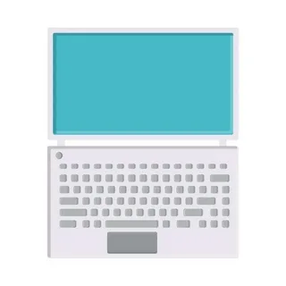
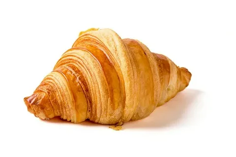

<!-- HTML Карты изображений. -->
<!--
С помощью HTML-карт изображений можно создавать интерактивные 
области на изображениях.
-->

<!-- Карты изображений -->
<!-- 
Тег HTML <map> определяет карту изображений. Карта изображений -
это изображение с интерактивными областями. Области определяется с
помощью одного или нескорльких <area>.
-->


<!-- Изображение -->
<!-- 
Изображение вставлено с помщью тега . Единственное отличие от 
других изображений заключается в том , что необходимо добавиоть 
атрибут 'usemap':
-->


<!-- Значение 'usemap' начианется с хеш-тега # , за которым 
следует имя карты изображений. Оно используется для установления 
связи  между изображением и картой изображений. 
-->

<!-- Совет: в качестве карты изображений можно использовать 
любое изображение ! 
-->

<!-- Создайте карту изображений -->
<!-- 
Затем добавьте элемент <map>.

Элемент <map> используется для создания карты изображений и 
связывается с изображением с помощью обязатиельного атрибута 'name':
-->

<!-- name атрибут должен иметь то же значение, что и 
 usemap атрибут  
-->

<map name="mapname"></map>

<!-- Области -->

<!-- 
Затем добавьте области , по которым можно кликнуть.

Область, по которой можно кликнуть, определяется с помощью <area>
элемента.
-->

<!-- Форма -->
<!-- 
Необходимо определить форму области, по которой можно кликнуть, 
и выбрать одно из следующих значений. 'shape'

 - rect - определяет прямоуголную область.
 - circle - определяет крглую область.
 - poly - определяет многоугольную область.
 - default - определяет всю область.

Чтобы разместить интерактивную область на изображение , необходимо
также указать некоторые координаты. 'coords'
-->

<!-- Форма = "прямоугольник" -->
<!-- 
Координаты для shape = 'rect' указываеются парами одна пара для оси
X друга для - оси Y

-->


<!-- shape='rect' -->
<!-- coords="42,45,250,270" -->
<h3>map for shape='rect'</h3>


<map name="laptop">
<area shape="rect" coords="42,45,250,270" href="https://www.w3schools.com/" alt="wwww3school" target="_blank">
</map>


<!-- shape='circle' -->
<!-- coords = '50, 50 , 30' -->
<!-- 50, 50 - radiuslari        30 - border-radius -->
<h3>shape circle</h3>

<map name="coffee">
<area shape="circle" coords="50,50,66" title="Circle" href="https://www.w3schools.com/">
</map>

<!-- shape='poly' -->
<!-- 
shape= 'poly' содержит несколько точек координатЮ которые обрзуют 
фигуру сосстоящую из прямых линий (многоугольник). 
-->

<h3>shape poly</h3>

<map name="poly">
<area shape="poly" coords="89,239,157,244,219,248,268,247,323,219,357,194,389,177,390,139,356,122,307,97,255,73,202,54,155,71,130,102,108,123,91,144,70,172,43,192,53,225" href="#">
</map>